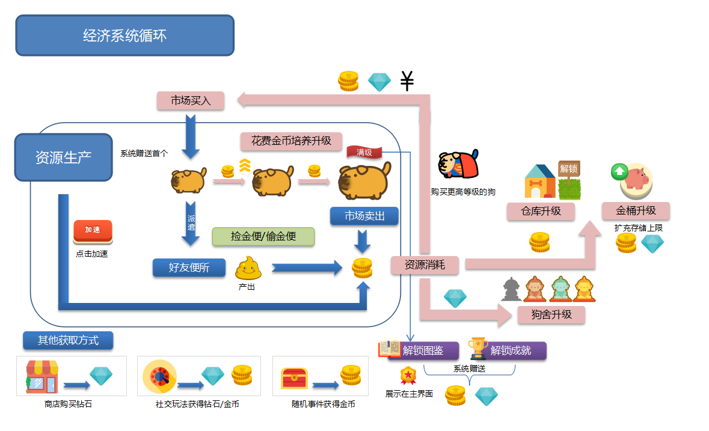
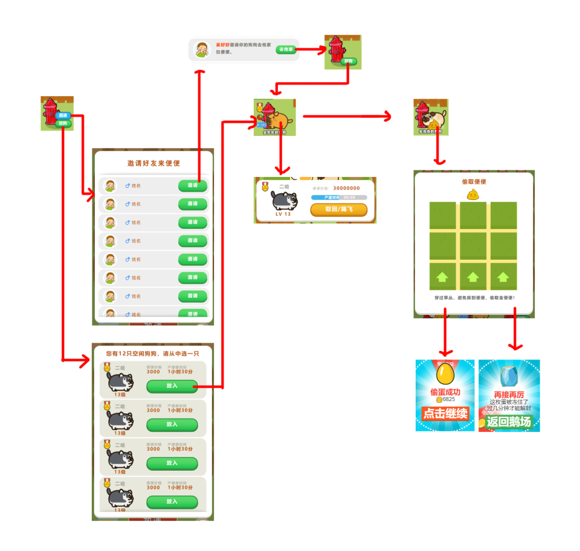
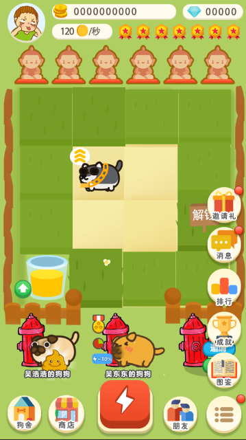

从经营目标拆解系统结构

设计问题
如何让放置产出、成长目标与社交玩法形成关联，而不是堆叠功能入口？
文档产出与来源
立项案第 5.2 节将主界面与资源、培养、社交、收集和商业化入口连接，详细系统文档继续说明规则及跳转。
关键方案与工作价值
- 以主场景为中心组织系统层级，区分常用入口与扩展功能。
- 将图鉴、成就与成长连接，为持续培养提供阶段目标。
- 区分世界榜、好友榜、好友申请与拜访，细化社交模块的职责边界。
在页面内阅读从经营目标拆解系统结构大图
DESIGN JOURNAL / 方案摘要
读背景、职责、方案与可证实产出。
SYSTEM DESIGN / ECONOMY / UI·UE
从系统关系到资源循环，再到界面状态与操作流程，展示策划方案如何落到可讨论的交付内容。
按用户指定归入“谁是火车王”项目资料，原文标题为《超级铲屎官》，正文称其基于《疯狂鹅场》后续开发；不把历史标题直接认作最终上线名称。系统文档页眉署名“策划：吴天昊”；封面另有笔名，未据此推定身份。这里展示文档支持的策划产出，图中美术由团队承担，历史方案不代表全部已上线。
如何让放置产出、成长目标与社交玩法形成关联，而不是堆叠功能入口？
立项案第 5.2 节将主界面与资源、培养、社交、收集和商业化入口连接，详细系统文档继续说明规则及跳转。

怎样让放置收益有持续的投入方向，并让容量与培养形成不同的成长目标？
第 5.3 节经济循环图整理生产、收取、培养、购入与升级的关系，展示系统与资源设计的结构表达。

邀请与派遣涉及多名玩家，如何说明可操作条件、等待状态和结果反馈？
第 6.3 节同时提供规则正文与操作流程图，覆盖邀请、仓库选择、派遣、等待和收取；原图含历史示例界面。

如何减少访问核心功能的操作，同时为后续功能保留扩展空间？
更新说明明确将常用入口从折叠菜单移至主界面下方，调整收取容器的位置并缩小加速按钮；主界面图提供交付参考。
来源：用户指定 Goose 目录中的《超级铲屎官》立项策划案_20180629.doc，封面日期为 2018/6/14，文件名为 20180629 版本。完整原件、市场测试数据、配置表与程序文件未公开。

放置经营需要把生产、培养、容量与社交操作连接为可持续循环。
主策划参与记录已确认，指定立项案页眉支持策划产出；原文名称保留，不将团队美术与程序认定为本人执行。
整理系统结构、经济循环、社交操作及主界面入口，并明确成长、库存、派遣与领奖的交互状态。
形成系统与经济结构图、社交操作流程和界面需求说明；资料证明历史方案，不证明全部上线或增长效果。
摘要依据：用户指定 Goose 目录；《超级铲屎官》立项案页眉“策划：吴天昊”，2018年版本。按用户指定归入该项目；《超级铲屎官》不直接认作最终上线名称。原图与本站整理结构图分开标注，完整原件和配置不公开。
放大流程图 ↗可滚动阅读大图；也可打开流程图缩放。下方文字提供同等内容。